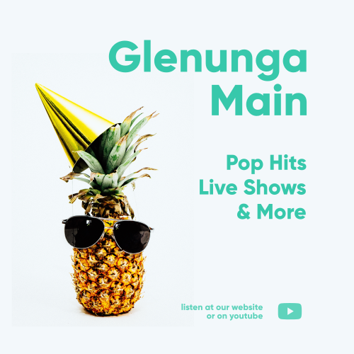
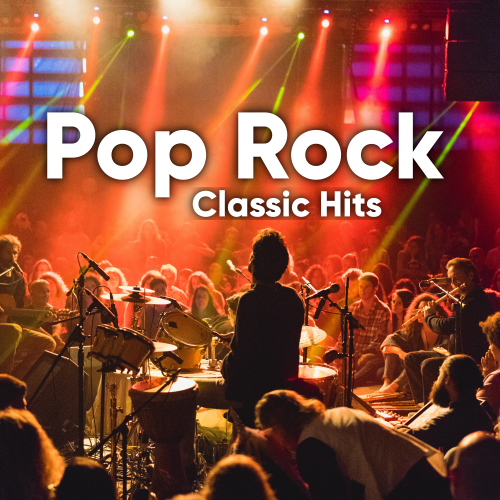

Playlist / Talk Show
Want a well-rounded listening experience including the latest pop hits? This is where we host our very own talk show as well as streaming pop tracks, 24/7.

Playlist
Curated by Javad Hamidi

Playlist
Streaming new and old house and dance tracks, 24/7. Featuring new music and well-known hits.
Curated by Archer Gardiner-Sheridan

Playlist
Featuring rock and pop tracks of the 20th and 21st centuries, this signature sound contains no synthesized instruments.
Curated by Leo Bodycomb
00:00:00:00